Nhân viên trưng bày sử dụng hằng ngày
Vận hànhThành quả của quá trình đồng hành cùng Unilever: từ ứng dụng cho Nhân viên trưng bày tại cửa hàng đến dashboard điều hành. 35 module đang vận hành thực tế, 14 module đang pilot, cùng A.I đang được triển khai và Visibility status đang được phát triển.
Hệ thống không chỉ để quản lý mà để thực thi tốt hơn tại cửa hàng.
Nhân viên trưng bày sử dụng hằng ngày
Vận hànhCửa hàng được phủ
Vận hànhthời gian nhập báo cáo nhờ A.I tự điền
Mục tiêuTừ cửa hàng đến phòng điều hành: mỗi hệ thống một vai trò, cùng một luồng dữ liệu.
Nhân viên trưng bày thực hiện tại cửa hàng
Quản trị, kiểm soát và QC
Chỉ số điều hành theo thời gian thực
Xem thị trường trên mobile
Hệ thống cho khối FW và FC
Hai năng lực đang được đẩy mạnh để chuyển từ số hóa sang thông minh hóa thực thi tại thị trường.
A.I phát hiện tự động các trưng bày không đạt từ hình ảnh chụp tại cửa hàng.
Tự điền số liệu vào báo cáo của nhân viên, giảm thao tác nhập tay.
Nhân viên kiểm tra và chỉnh sửa nếu có sai số: A.I hỗ trợ, con người xác nhận.
Trạng thái trực quan 3 mức cho từng cửa hàng:
Chọn hệ thống và bấm mũi tên để xem các màn hình.
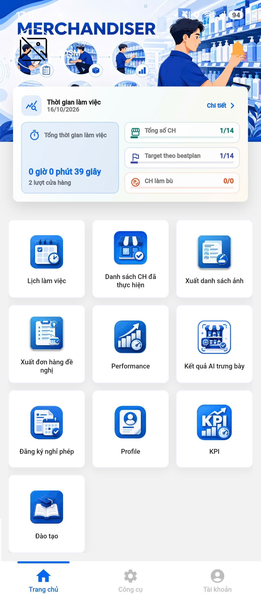
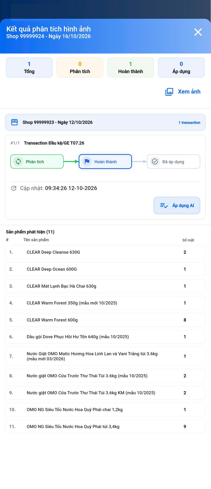
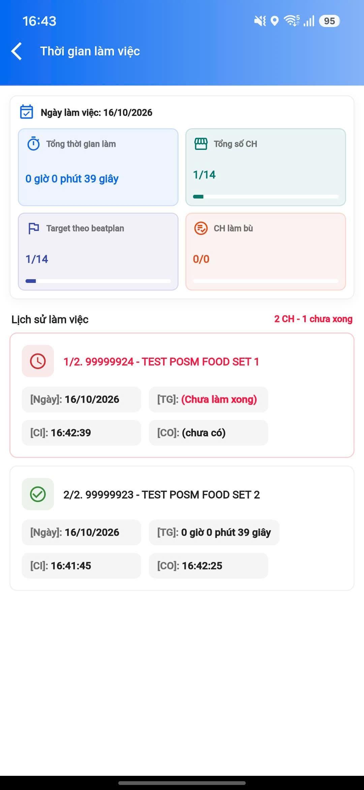
APP Unime: ứng dụng hằng ngày của Nhân viên trưng bày
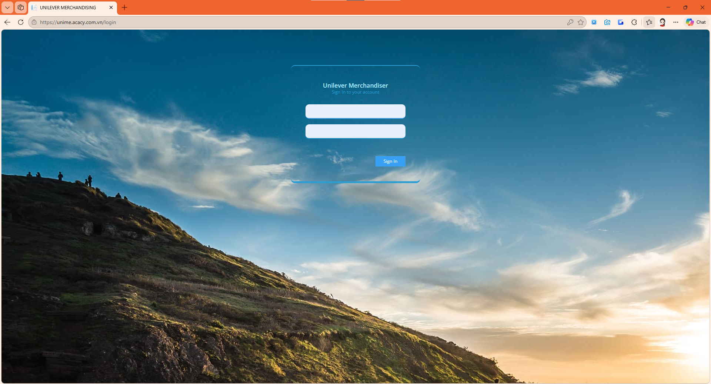
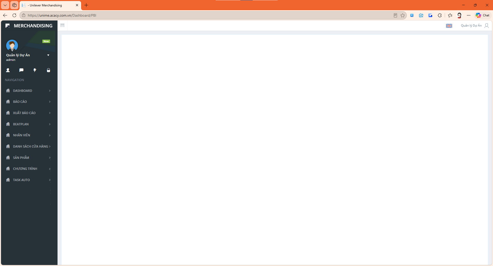
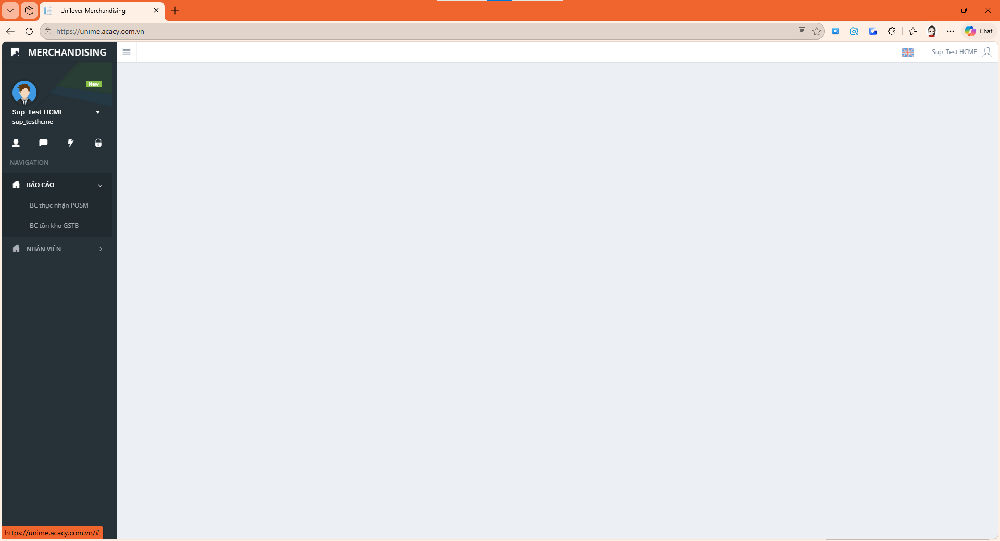
Web Unime: quản trị, kiểm soát và QC
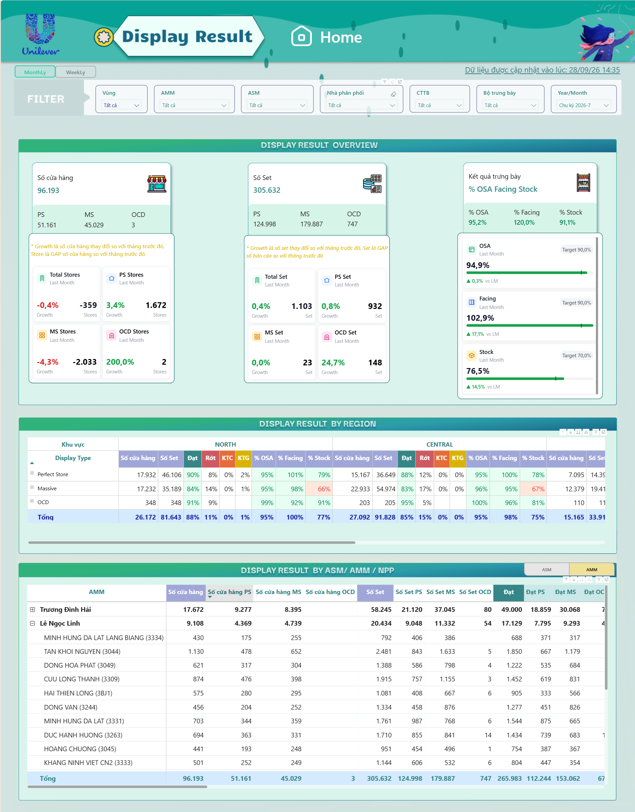
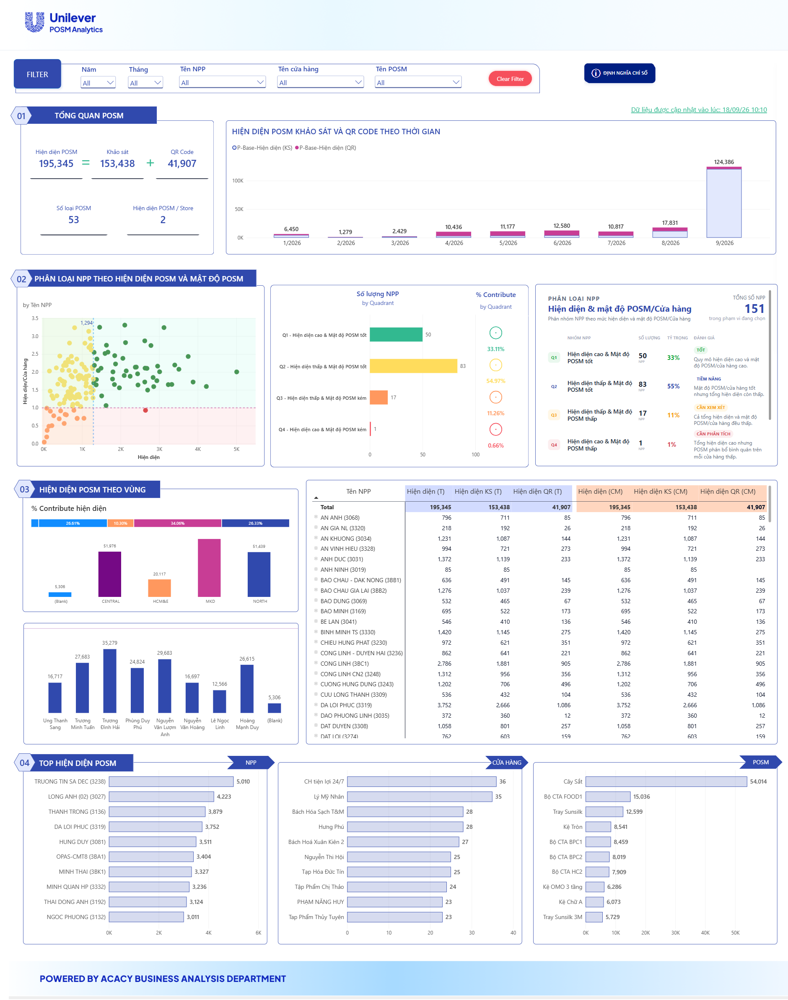
Dashboard: điều hành trên desktop
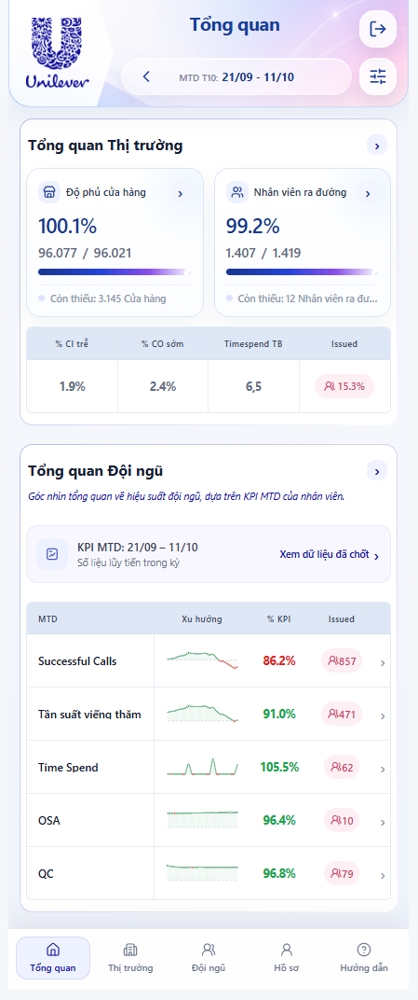
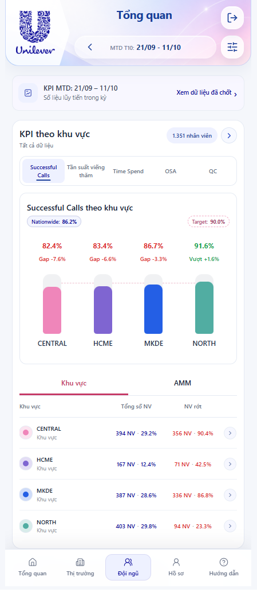
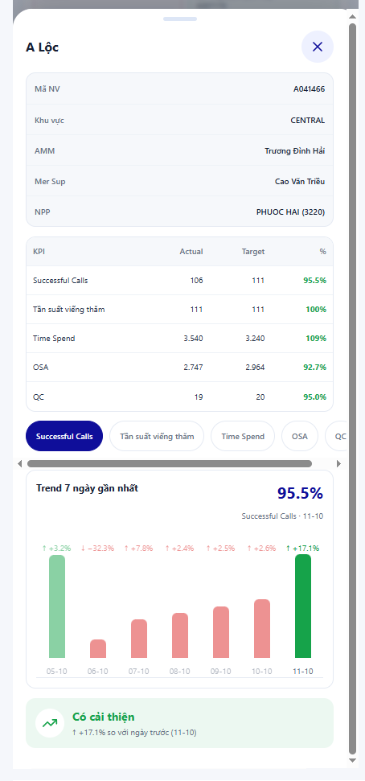
AcacyOne: xem thị trường trên mobile
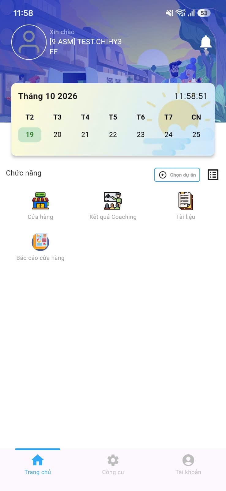
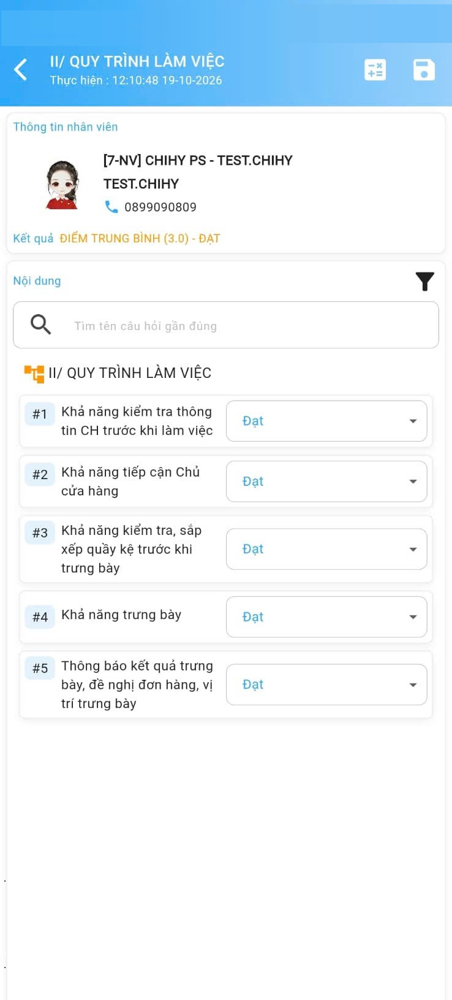
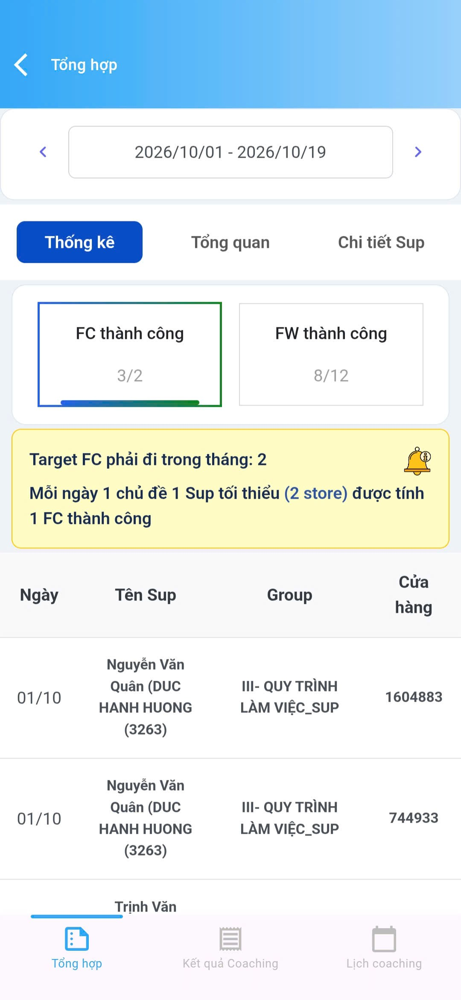
System FWFC: hệ thống cho khối FW và FC
Giao diện hoàn toàn mới, trải nghiệm hiện đại
Mở rộng đa nền tảng: hỗ trợ cả iOS và Android
A.I phát hiện tự động các trưng bày không đạt
A.I nhận diện hình ảnh, tự điền số liệu vào báo cáo của nhân viên
Nhân viên chỉ cần kiểm tra và chỉnh sửa nếu có sai số
Visibility trực quan theo 3 mức: Xanh / Vàng / Đỏ, hiển thị ngay trên danh sách cửa hàng
Thống kê ngay trên app theo Ngày và MTD: số CH trên tuyến, số CH đạt V, % CH đạt V, phân bổ cửa hàng theo V
Chi tiết từng cửa hàng (CH đạt, tổng set, set đạt), phục vụ thi đua Mer Contest
Danh sách cửa hàng cần viếng thăm
Beatplan theo ngày
Cửa hàng đi làm bù
Cửa hàng gần tôi — tối ưu lộ trình di chuyển
Lưu lại cửa hàng đã viếng thăm trong ngày và chương trình trưng bày đã khảo sát.
Thông tin cửa hàng, chủ cửa hàng; chụp ảnh overview mỗi lần viếng thăm; chống gian lận vị trí; áp dụng target thời gian làm việc tối thiểu tại cửa hàng.
% hoàn thành KPI theo thời gian thực
Lương tạm tính minh bạch
Tối ưu và mở rộng tính năng tại cửa hàng
Cập nhật QRCode cửa hàng
Thông tin cửa hàng, chấm công, tác vụ
Promotion (chương trình trưng bày) với công thức tạm tính đạt/rớt
SOS, POSM Khảo sát, POSM QRCode
Tổng thời gian làm việc trong ngày, số cửa hàng đã viếng thăm/beatplan, số cửa hàng bù
Lịch sử thời gian tại từng cửa hàng (CI, CO, total time)
Nhân viên chủ động tạo mới cửa hàng viếng thăm ngay trên app.
Nhân viên tự đăng ký thêm promotion cho cửa hàng ngay trên app.
Xuất nhanh danh sách hình ảnh đã chụp: overview cửa hàng, KPIs, chương trình trưng bày,…
Lập đơn hàng đề nghị từ danh sách sản phẩm hết hàng chỉ với vài thao tác.
Thống kê hiệu suất của từng nhân viên.
Quy trình duyệt phép theo cấp:
Mer đăng ký → SUP duyệt
SUP đăng ký → AMM duyệt
AMM đăng ký → cấp quản lý duyệt
Hồ sơ cá nhân: thông tin user, quản lý, ngày bắt đầu tại ACACY, NPP, Vùng và các thành tựu.
Chụp khuôn mặt chính diện, trái, phải để cập nhật hồ sơ nhân viên — xác thực chính xác.
Khóa học đào tạo trực tiếp trên app.
Thông báo chương trình và cập nhật quan trọng đến từng nhân viên.
Gửi thông tin trực tiếp đến IT để được hỗ trợ kịp thời.
Phân hệ quản trị hệ thống — nền tảng vận hành và kiểm soát tập trung toàn bộ Web Unime.
Theo dõi kết quả thực thi của Nhân viên trưng bày: chấm công, báo cáo trưng bày, POSM, SOS,…
Quản lý dữ liệu nền tảng tập trung: nhân viên, cửa hàng, nhà phân phối, sản phẩm.
Thiết lập chương trình trưng bày: thông tin promotion, sản phẩm áp dụng và target trưng bày.
Thiết lập target KPI theo từng cửa hàng — cơ sở rõ ràng để đánh giá hiệu suất.
Quản lý tồn kho và lắp đặt POSM tại từng cửa hàng, kiểm soát vật phẩm minh bạch.
Đăng ký beatplan riêng cho từng Nhân viên trưng bày, đảm bảo lịch viếng thăm rõ ràng, kiểm soát được.
Kiểm soát chất lượng báo cáo trưng bày do nhân viên gửi về, đảm bảo dữ liệu chính xác.
Tự động gửi báo cáo đến ASM, NPP, AMM,… — thông tin đến đúng người, đúng thời điểm.
Xem nhanh thông tin cửa hàng, kết quả trưng bày, tiền thưởng,…
Visibility trực quan theo 3 mức: Xanh / Vàng / Đỏ (view thứ 2, bên cạnh view thống kê trên Unime app)
Quét được bằng Zalo hoặc camera linh động; bảo mật — cần đăng nhập tài khoản mới xem được dữ liệu
Quản trị toàn bộ vòng đời POSM tại NPP và cửa hàng: nhập – tồn – lắp đặt – thu hồi.
Tổng hợp key metrics giúp cấp quản lý nắm nhanh tình hình thị trường chỉ trong một màn hình.
Bức tranh nhân sự theo khu vực, thâm niên, độ tuổi, giới tính và tỷ lệ nghỉ việc.
Theo dõi số lượng nhân viên thị trường đang làm việc cùng các chỉ số tuân thủ.
Kết quả trưng bày (Đạt, Rớt, KTB, KTC) kèm % thực đạt của OSA – Facing – Stock.
Kết quả QC (Remind, Pass, Reject, Cheating) theo thời gian, khu vực, CTTB, bộ trưng bày,…
Hiệu suất nhân viên qua các chỉ số OSA, QC, Timespend, Successful Call,…
Điểm khởi đầu để truy cập Dashboard hoặc xem Kế hoạch triển khai.
Góc nhìn toàn cảnh về tình hình vận hành, Thị trường và Đội ngũ.
Theo dõi hiệu quả hoạt động ngoài thị trường theo các nhóm chỉ số chính.
Phân tích chuyên sâu dữ liệu thị trường theo KPI và cấp quản lý.
Theo dõi mức độ thực hiện kế hoạch phủ Cửa hàng và Nhân viên.
Giám sát mức độ tuân thủ hoạt động và quy trình làm việc ngoài thị trường.
Theo dõi tình hình thực hiện và chất lượng trưng bày tại điểm bán.
Tổng hợp hiệu suất KPI và mức độ rủi ro của đội ngũ theo từng cấp quản lý.
Phân tích sâu hiệu suất nhân viên theo KPI, quản lý và nhóm rủi ro.
Hồ sơ, kết quả KPI và xu hướng hiệu suất của từng nhân viên.
Xuất báo cáo KPI đội ngũ dạng hình ảnh — chia sẻ nhanh chỉ với vài thao tác.
Theo dõi các hạng mục chức năng và kế hoạch phát triển của hệ thống.
Quản lý thông tin và thiết lập cá nhân của người dùng.
Phân hệ mới phát triển trong năm cho khối FC, kết nối AMM – SUP; đã đi vào vận hành.
Phân hệ mới phát triển trong năm cho khối FC, kết nối SUP – Mer; đã đi vào vận hành.
Phân hệ mới phát triển trong năm cho khối FW dành cho AMM; đã đi vào vận hành.
Phân hệ mới phát triển trong năm cho khối FW dành cho SUP; đã đi vào vận hành.
Nền tảng đào tạo trực tuyến (E-learning) cho khối FW và FC — nâng cao năng lực đội ngũ mọi lúc, mọi nơi; đã đi vào vận hành.
Phân hệ báo cáo mới phát triển trong năm cho khối FW và FC; đã đi vào vận hành.
Từ cửa hàng đến phòng điều hành: một vòng khép kín giữa thực thi, kiểm soát và ra quyết định.
Mọi lượt viếng thăm đều có dữ liệu xác thực từ cửa hàng.
Báo cáo trưng bày được QC và gửi tự động đến quản lý.
Quản lý nắm tình hình thị trường trên dashboard và mobile.
A.I hỗ trợ nhập báo cáo, E-learning nâng cao năng lực đội ngũ.
Toàn bộ 56 module theo từng hệ thống: đã hoàn thành, đang triển khai và kế hoạch.
* Mốc thời gian là số minh họa, cần xác nhận lại với Unilever trước khi gửi.
ACACY đã cùng Unilever xây nền tảng vững chắc. Đây là những bước chúng tôi đề xuất cho giai đoạn tiếp theo.
Tiếp tục vận hành và bảo trì các hệ thống đã hoàn thành.
AcacyOne trên mobile và Quản lý POSM trên web.
App giao diện mới, Dashboard POSM và các tác vụ ngay trên app.
A.I nhận diện hình ảnh, tự điền số liệu vào báo cáo, nhân viên chỉ cần kiểm tra lại.
ACACY đề xuất chuyển AcacyOne và Quản lý POSM sang chính thức trong Quý 4/2026, đồng thời tiếp tục cùng Unilever triển khai A.I và Visibility status.
Đặt lịch demo